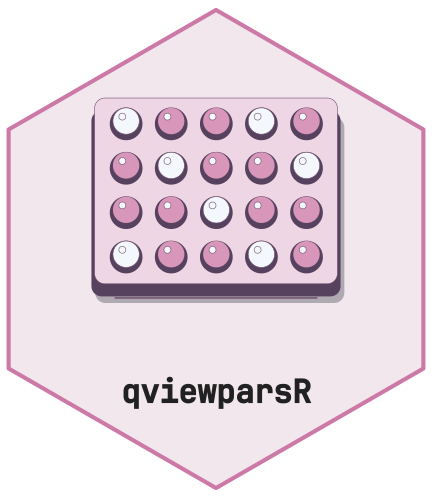
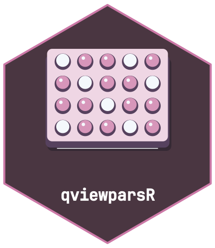
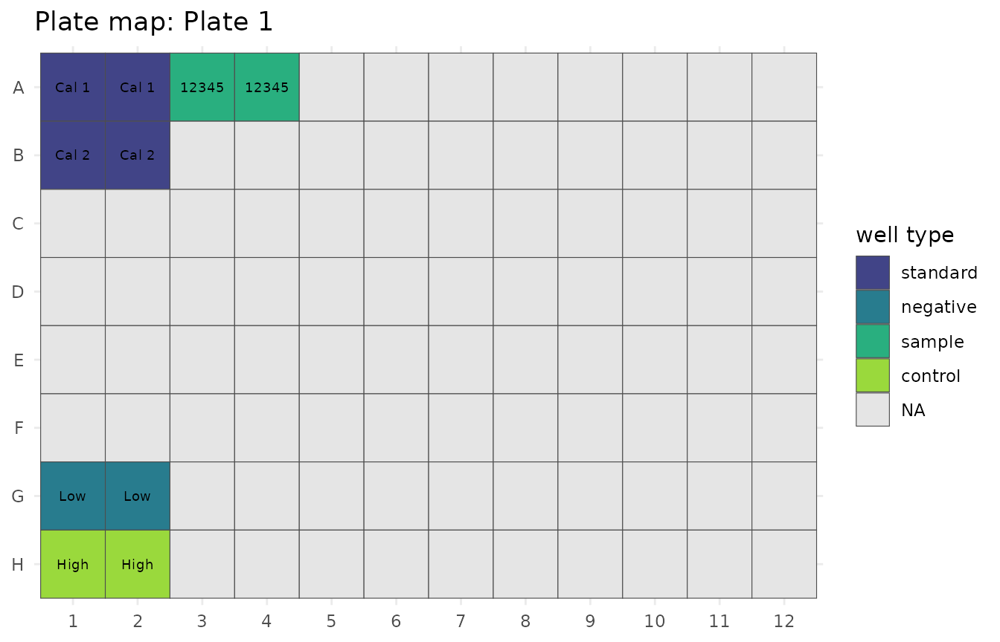
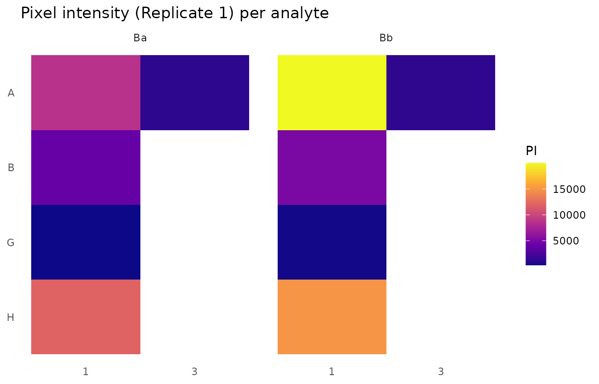
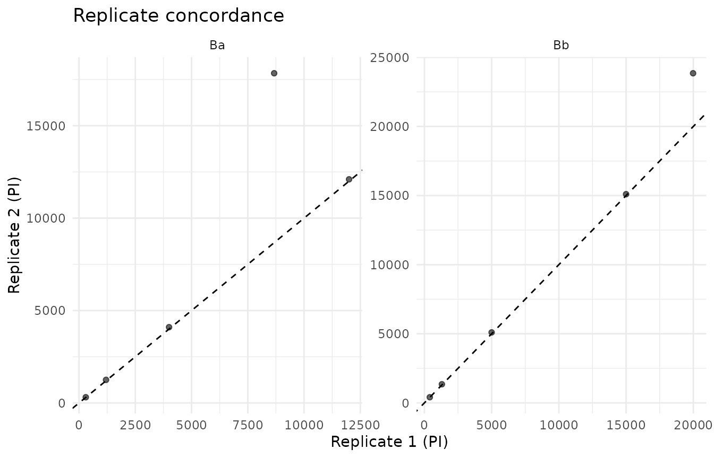
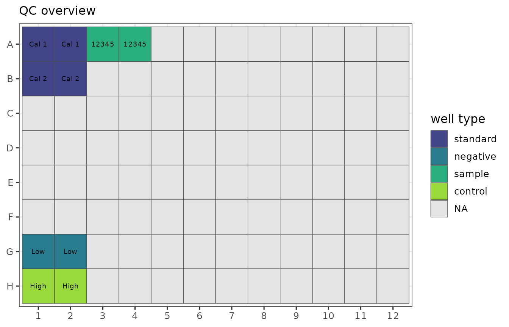

Reading and analysing .Q-View files with qviewparsR
R. Heller and M. Mannes
Source:vignettes/qviewparsR.Rmd
qviewparsR.Rmd

A .Q-View file is a single-file binary container that
bundles a plain-text manifest, an embedded H2 SQL database with project
metadata / analyte panel / sample assignments / replicate pixel
intensities (and – when generated – a fully rendered CSV report stored
as a CLOB), and one or more LOB segments holding the raw
chemiluminescent plate images.
qviewparsR extracts the available embedded report fields
as tidy tibbles. It does not reconstruct database transactions or
extract raw images. There is no Java runtime, no H2 database driver, no
compiled code – all logic is pure R.
Installation
qviewparsR is pure R – no compiled
code, no Java runtime, no H2 database driver, and no system libraries –
so it installs identically on Windows, macOS, and
Linux. The only hard prerequisite is R >=
4.1.0.
From CRAN:
install.packages("qviewparsR")Development version from GitHub:
if (!requireNamespace("pak", quietly = TRUE)) install.packages("pak")
pak::pak("CTTIR/qviewparsR")Platform notes: on Windows no Rtools is
required (the package compiles nothing and its CRAN dependencies arrive
as binaries); on macOS nothing beyond R is needed; on
Linux the package itself is pure R, but a few
dependencies (dplyr, readr,
tidyr, openxlsx2) contain C++ and build from
source unless you use a binary repository (for example the Posit Public
Package Manager or r2u), which avoids needing a compiler.
The package depends on a small tidyverse-aligned core
(cli, dplyr, fs,
lifecycle, openxlsx2, readr,
rlang, tibble, tidyr). Plotting
requires ggplot2; the publication overview adds
patchwork; the Shiny front-end adds shiny,
bslib, DT, withr.
A complete walk-through
library(qviewparsR)
project <- system.file("extdata", "example.Q-View", package = "qviewparsR")
qv <- read_qview(project, verbose = FALSE)
qv # one-screen summary
#>
#> ── Q-View project: "Example ELISA project" ─────────────────────────────────────
#> • Plate: "Plate 1"
#> • Image: "example-plate (01 Jan 2024 12:00)"
#> • Imager: "#000000 (00000)"
#> • Product: "EXAMPLE-LOT"
#> • Software: v"3.13"
#> • Template: "example-template"
#> • Created: "01 Jan 2024 12:05"
#>
#> ── Analytes (3) ──
#>
#> Ba (ng/ml), Bb (ug/ml), Ref Spot (N/A)
#>
#>
#> ── Well groups (5) ──
#>
#>
#>
#> • standard: 2
#>
#> • negative: 1
#>
#> • control: 1
#>
#> • sample: 1
#>
#>
#>
#> ── Data ──
#>
#>
#>
#> • replicate rows: 20
#>
#> • summary stat rows: 0
#>
#> • concentrations: 4 rows
#>
#> • curve fit: 3 analytes
qv$analytes # spot_number, analyte, unit, lod, lloq, uloq
#> # A tibble: 3 × 8
#> spot_number analyte unit lod lloq uloq assay_control_low
#> <int> <chr> <chr> <dbl> <dbl> <dbl> <dbl>
#> 1 1 Ba ng/ml 0.065 0.26 18.9 NA
#> 2 2 Bb ug/ml 0.00051 0.0029 0.2 NA
#> 3 3 Ref Spot N/A NA NA NA 5000
#> # ℹ 1 more variable: assay_control_high <dbl>
qv$well_groups # one row per sample / calibrator / control
#> # A tibble: 5 × 7
#> well_group sample_id is_standard is_negative is_sample is_control well_type
#> <chr> <chr> <lgl> <lgl> <lgl> <lgl> <fct>
#> 1 ICal 1 ICal 1 TRUE FALSE FALSE FALSE standard
#> 2 ICal 2 ICal 2 TRUE FALSE FALSE FALSE standard
#> 3 GLow GLow FALSE TRUE FALSE FALSE negative
#> 4 HHigh HHigh FALSE FALSE FALSE TRUE control
#> 5 N12345 N12345 FALSE FALSE TRUE FALSE sample
qv$pixel_intensities # long-format replicate readings
#> # A tibble: 20 × 12
#> well_group sample_id well replicate analyte unit pixel_intensity dilution
#> <chr> <chr> <chr> <int> <chr> <chr> <dbl> <dbl>
#> 1 ICal 1 ICal 1 A1 1 Ba ng/ml 8671 NA
#> 2 ICal 1 ICal 1 A1 1 Bb ug/ml 19982 NA
#> 3 ICal 1 ICal 1 A2 2 Ba ng/ml 17838 NA
#> 4 ICal 1 ICal 1 A2 2 Bb ug/ml 23848 NA
#> 5 ICal 2 ICal 2 B1 1 Ba ng/ml 4000 NA
#> 6 ICal 2 ICal 2 B1 1 Bb ug/ml 5000 NA
#> 7 ICal 2 ICal 2 B2 2 Ba ng/ml 4100 NA
#> 8 ICal 2 ICal 2 B2 2 Bb ug/ml 5100 NA
#> 9 GLow GLow G1 1 Ba ng/ml 300 NA
#> 10 GLow GLow G1 1 Bb ug/ml 400 NA
#> 11 GLow GLow G2 2 Ba ng/ml 310 NA
#> 12 GLow GLow G2 2 Bb ug/ml 410 NA
#> 13 HHigh HHigh H1 1 Ba ng/ml 12000 NA
#> 14 HHigh HHigh H1 1 Bb ug/ml 15000 NA
#> 15 HHigh HHigh H2 2 Ba ng/ml 12100 NA
#> 16 HHigh HHigh H2 2 Bb ug/ml 15100 NA
#> 17 N12345 N12345 A3 1 Ba ng/ml 1200 NA
#> 18 N12345 N12345 A3 1 Bb ug/ml 1300 NA
#> 19 N12345 N12345 A4 2 Ba ng/ml 1250 NA
#> 20 N12345 N12345 A4 2 Bb ug/ml 1350 NA
#> # ℹ 4 more variables: raw_value <chr>, flag <chr>, error_codes <chr>,
#> # statistic_label <chr>
qv$summary_statistics # per-group mean / std-dev / CV rows
#> # A tibble: 0 × 10
#> # ℹ 10 variables: well_group <chr>, sample_id <chr>, statistic <chr>,
#> # analyte <chr>, value <dbl>, unit <chr>, raw_value <chr>, flag <chr>,
#> # error_codes <chr>, statistic_label <chr>
qv$plate_layout # one row per plate well
#> # A tibble: 96 × 7
#> plate_row plate_col well well_group sample_id dilution well_type
#> <chr> <int> <chr> <chr> <chr> <dbl> <fct>
#> 1 A 1 A1 ICal 1 ICal 1 NA standard
#> 2 B 1 B1 ICal 2 ICal 2 NA standard
#> 3 C 1 C1 NA NA NA NA
#> 4 D 1 D1 NA NA NA NA
#> 5 E 1 E1 NA NA NA NA
#> 6 F 1 F1 NA NA NA NA
#> 7 G 1 G1 GLow GLow NA negative
#> 8 H 1 H1 HHigh HHigh NA control
#> 9 A 2 A2 ICal 1 ICal 1 NA standard
#> 10 B 2 B2 ICal 2 ICal 2 NA standard
#> # ℹ 86 more rows
summary(qv) # mean / SD / CV per well type x analyte
#>
#> ── Q-View summary ──────────────────────────────────────────────────────────────
#> Mean / SD / CV of pixel intensities, grouped by well type:
#> # A tibble: 8 × 12
#> well_type analyte unit n mean sd cv min max n_observed
#> <fct> <chr> <chr> <int> <dbl> <dbl> <dbl> <dbl> <dbl> <int>
#> 1 standard Ba ng/ml 4 8652. 6500. 0.751 4000 17838 4
#> 2 standard Bb ug/ml 4 13482. 9864. 0.732 5000 23848 4
#> 3 negative Ba ng/ml 2 305 7.07 0.0232 300 310 2
#> 4 negative Bb ug/ml 2 405 7.07 0.0175 400 410 2
#> 5 sample Ba ng/ml 2 1225 35.4 0.0289 1200 1250 2
#> 6 sample Bb ug/ml 2 1325 35.4 0.0267 1300 1350 2
#> 7 control Ba ng/ml 2 12050 70.7 0.00587 12000 12100 2
#> 8 control Bb ug/ml 2 15050 70.7 0.00470 15000 15100 2
#> # ℹ 2 more variables: n_missing <int>, n_censored <int>read_qview() returns the list of class
qview described in ?read_qview. Optional
concentrations or curve fits can be NULL when they are
absent; check before using them. Reports currently support A1–H12.
Conflicting embedded observations are refused: obtain a fresh producer
report rather than assume the most frequent copy represents the current
transaction.
Reading flat report exports
Sometimes only the flat report Q-View writes next to the binary
container is kept – the ..._auto_report or
..._auto_all-parameters_report file, as .csv
or .xlsx. When the original .Q-View project is
unavailable, read_qview_report() parses that export and
returns the same qview object read_qview()
builds:
report_path <- system.file("extdata", "example-report.csv", package = "qviewparsR")
rep <- read_qview_report(report_path, verbose = FALSE)
is_qview(rep) # TRUE -- same class as read_qview()
#> [1] TRUE
rep$concentrations # long-format, with an out-of-range `flag`
#> # A tibble: 8 × 13
#> well_group sample_id well replicate statistic analyte unit concentration
#> <chr> <chr> <chr> <int> <chr> <chr> <chr> <dbl>
#> 1 Cal 1 Cal 1 A1 1 replicate Ba ng/mL 28.0
#> 2 Cal 1 Cal 1 A1 1 replicate Bb ug/mL 0.41
#> 3 Cal 1 Cal 1 A2 2 replicate Ba ng/mL NA
#> 4 Cal 1 Cal 1 A2 2 replicate Bb ug/mL 0.47
#> 5 N12345 N12345 A3 NA reduced Ba ng/mL 2.5
#> 6 N12345 N12345 A3 NA reduced Bb ug/mL 0.05
#> 7 N23456 N23456 A4 NA reduced Ba ng/mL 0.31
#> 8 N23456 N23456 A4 NA reduced Bb ug/mL 0.42
#> # ℹ 5 more variables: dilution <dbl>, flag <chr>, raw_value <chr>,
#> # error_codes <chr>, statistic_label <chr>Both readers preserve recognized missing and censored measurements,
with raw_value and flag alongside the numeric
value. A "< 52.50" cell has value 52.50 and flag
<: it is a bound, not an observed concentration.
Incalculable remains missing and flagged. Numeric plots and
summary estimates exclude censored and missing values; summary counts
expose both categories. Malformed nonblank numeric values are errors,
not silently missing data.
The naming convention
The producing software rewrites identifiers from the original well-assignment template before storing them. The mapping is systematic and reversible:
| Template value | Stored as |
|---|---|
Cal 1 … Cal N
|
ICal 1 … ICal N
|
Low |
GLow |
High |
HHigh |
FD24277364, 1211498458, … |
NFD24277364, N1211498458, … |
strip_qview_prefix() reverses the rewrite. Pass
strip_prefix = TRUE to read_qview() to apply
it across every sample-id column at once:
qv <- read_qview(project, strip_prefix = TRUE, verbose = FALSE)
unique(qv$well_groups$sample_id)
#> [1] "Cal 1" "Cal 2" "Low" "High" "12345"
strip_qview_prefix(c("ICal 1", "GLow", "HHigh", "NFD24277364"))
#> [1] "Cal 1" "Low" "High" "FD24277364"
#> [1] "Cal 1" "Low" "High" "FD24277364"Coercion and tidy-data idioms
as_tibble() returns the long-format
pixel_intensities table – the primary tabular payload – so
a parsed object drops straight into a dplyr / ggplot2 pipeline:
library(dplyr)
#>
#> Attaching package: 'dplyr'
#> The following objects are masked from 'package:stats':
#>
#> filter, lag
#> The following objects are masked from 'package:base':
#>
#> intersect, setdiff, setequal, union
qv |>
as_tibble() |>
filter(replicate == 1L, is.na(flag), is.finite(pixel_intensity)) |>
group_by(analyte, unit) |>
summarise(median_pi = median(pixel_intensity, na.rm = TRUE),
.groups = "drop")
#> # A tibble: 2 × 3
#> analyte unit median_pi
#> <chr> <chr> <dbl>
#> 1 Ba ng/ml 4000
#> 2 Bb ug/ml 5000Visualisation
The plot.qview() method offers three quick-look views.
Plate and intensity maps use viridis palettes; the scatterplot compares
replicate pairs:
plot(qv, type = "plate_map") # 96-well plate, fill = well type
plot(qv, type = "intensity_heatmap") # facet per analyte, fill = PI
plot(qv, type = "replicate_scatter") # rep 1 vs rep 2 per analyte
Each call returns a ggplot object, so themes, scales,
and labels can be added on top:
library(ggplot2)
plot(qv, type = "plate_map") +
theme_bw(base_size = 12) +
labs(title = NULL, subtitle = "QC overview")
Exporting
Three writers cover the common destinations. All return the parsed
object invisibly, so they compose with |>:
out <- tempfile("qview-vignette-")
dir.create(out)
qv |>
write_qview_xlsx(file.path(out, "plate.xlsx")) |>
write_qview_csv(file.path(out, "plate_csv")) |>
write_qview_rds(file.path(out, "plate.rds"))
stopifnot(identical(readRDS(file.path(out, "plate.rds")), qv))All writers require overwrite = TRUE to replace existing
output. CSV replacement is for a dedicated bundle directory and refuses
unrelated files. Keep archival CSV as data: spreadsheet applications may
interpret text beginning with formula characters. Import such columns
explicitly as text when viewing them.
The legacy aliases qview_to_xlsx() and
qview_to_csv_dir() still work but emit
lifecycle::deprecate_warn(); switch to the new names.
Cross-validating against a template CSV
Every well assignment is already embedded in the .Q-View
file. If you also have the original well-assignment template CSV the
producing application imported, read_qview_template()
parses it into a tibble that aligns with
qv$plate_layout:
tmpl <- read_qview_template(system.file("extdata", "example-template.csv",
package = "qviewparsR"), verbose = FALSE)
qv$plate_layout |>
dplyr::full_join(tmpl, by = "well", suffix = c("_qview", "_template")) |>
dplyr::filter(xor(is.na(sample_id_qview), is.na(sample_id_template)) |
(!is.na(sample_id_qview) & !is.na(sample_id_template) &
sample_id_qview != sample_id_template))
#> # A tibble: 87 × 12
#> plate_row_qview plate_col_qview well well_group sample_id_qview
#> <chr> <int> <chr> <chr> <chr>
#> 1 C 1 C1 NA NA
#> 2 D 1 D1 NA NA
#> 3 E 1 E1 NA NA
#> 4 F 1 F1 NA NA
#> 5 C 2 C2 NA NA
#> 6 D 2 D2 NA NA
#> 7 E 2 E2 NA NA
#> 8 F 2 F2 NA NA
#> 9 B 3 B3 NA NA
#> 10 C 3 C3 NA NA
#> # ℹ 77 more rows
#> # ℹ 7 more variables: dilution_qview <dbl>, well_type <fct>,
#> # plate_row_template <chr>, plate_col_template <int>,
#> # sample_id_template <chr>, group_type <chr>, dilution_template <dbl>Rows surviving the filter expose differing or one-sided missing sample assignments, including wells present on only one side. The bundled files are synthetic examples, not independent instrument-validation evidence.
Interactive front-end
For non-coding collaborators, qview_app() launches a
Shiny app in the same monochrome aesthetic (light + dark mode) with the
hex sticker in the upper-left corner:
The app accepts a .Q-View upload (and optionally a
template CSV) and exposes:
- a publication-ready 2x2 Overview figure (plate layout / pixel intensity distribution / replicate concordance / mean PI by well type) with high-DPI PNG and vector PDF export;
- every parsed table with its own xlsx download;
- one-click xlsx / rds / csv-zip of the whole project;
- a built-in dark/light toggle and per-card max/restore.
Changing uploads or parsing settings clears previous results; parse again before exporting. The downloaded metadata retains original upload names and settings. PNG dimensions must be 3–30 inches, DPI 72–1200, and the product of width, height and squared DPI must not exceed 50 million pixels. PDF exports remain vector graphics. Invalid settings produce an error rather than a silently resized figure.
Error handling
Every exported function validates inputs early and raises a
structured cli::cli_abort() error pointing at the user’s
call rather than at internal helpers, e.g.:
Error in `read_qview()`:
! `path` must be an existing file.
x "missing.Q-View" does not exist.Error in `read_qview()`:
! `path` is not a valid `.Q-View` project file.
x "junk.bin" is missing the expected container header.
i Expected a numeric container version followed by "Q-View Project".The i bullet always carries an actionable hint when one
exists.
Citation
citation("qviewparsR")BibTeX:
@Manual{qviewparsR,
title = {qviewparsR: Read .Q-View Multiplex ELISA Project Files},
author = {R. Heller and M. Mannes},
year = {2026},
note = {R package version 1.0.0},
doi = {10.32614/CRAN.package.qviewparsR},
url = {https://CRAN.R-project.org/package=qviewparsR},
}To cite a specific archived source snapshot instead, use the Zenodo software DOI: